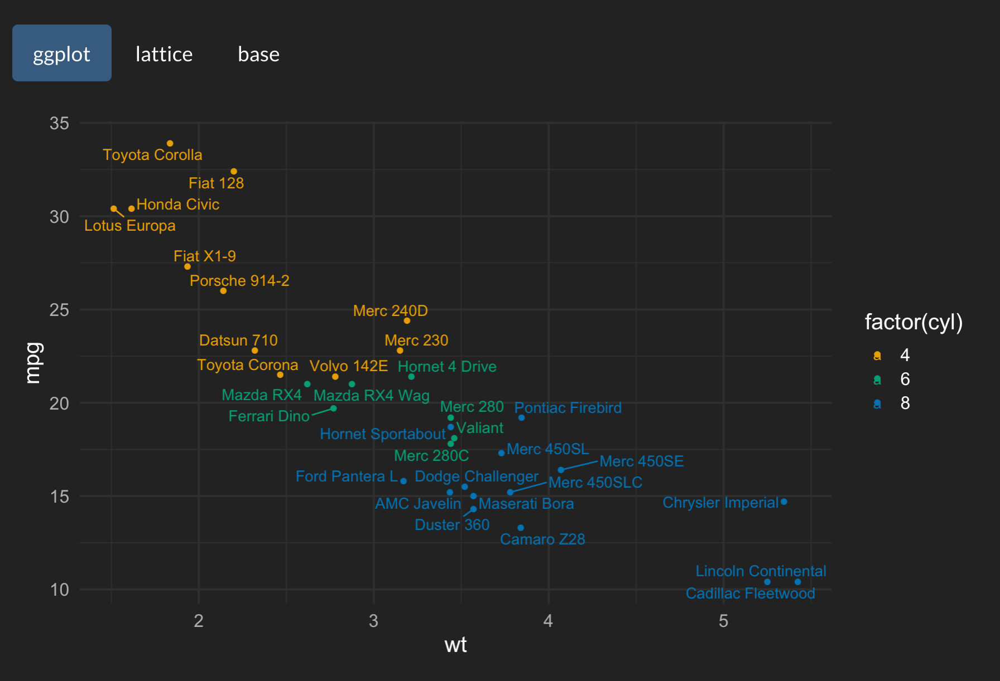
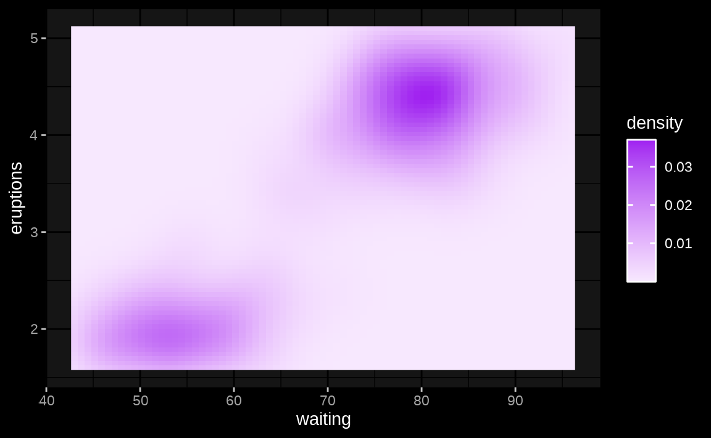

The most magical aspect of thematic is its auto theming capabilities, which gives R plots to ability to style themselves in Shiny (via CSS), R Markdown (via bslib), and RStudio (via RStudio themes). To gain a sense for how auto theming works, it’s recommended you read through the next section, which walks through several variants on a basic Shiny app, and demonstrates how auto theming makes R plots responsive to changes in CSS styling. Also, as discussed in other scenarios, it possible to configure the information thematic uses for auto theming, but you can also opt-out of auto theming by providing desired colors and fonts to thematic (as discussed on custom themes).
Shiny
One frustrating thing about styling Shiny apps is that R plots know
nothing about CSS. That means, if you write custom CSS to style
the app, you’ll likely also want to translate those same styles to
the R graphics. You may have never noticed this problem before if you
just use the default styles in both systems because they’re quite
similar. Here’s the default styles in a Shiny app with a few R plots
inside a tabsetPanel():
library(shiny)
library(ggplot2)
tabs <- tabsetPanel(type = "pills",
tabPanel("ggplot", plotOutput("ggplot")),
tabPanel("lattice", plotOutput("lattice")),
tabPanel("base", plotOutput("base"))
)
ui <- fluidPage(tabs)
server <- function(input, output) {
output$ggplot <- renderPlot({
ggplot(mtcars, aes(wt, mpg, label = rownames(mtcars), color = factor(cyl))) +
geom_point() +
ggrepel::geom_text_repel()
})
output$lattice <- renderPlot({
lattice::show.settings()
})
output$base <- renderPlot({
image(volcano, col = thematic_get_option("sequential"))
})
}
shinyApp(ui, server)
By bringing in a new set of CSS rules, say the darkly shinytheme, the difference in CSS vs R styles becomes much more apparent:

By activating thematic auto coloring (as shown
below), R plot(s) generated by the Shiny app gain new color defaults
based on the surrounding CSS styles. This works because, at plot time,
thematic grabs CSS styles from the plot(s) HTML
container (via shiny::getCurrentOutputInfo())1 and uses that info to
set new R styling defaults.
thematic_shiny()
shinyApp(ui, server)
From the ggplot2 example above, we can see
thematic_shiny() has done the following for us:
- Set new
ggplot2::theme()-ing defaults based on the background and foreground colors (as well as appropriate mixtures of these colors for the panel background). - Set a new color-blind safe default for
scale_color_discrete()(andscale_fill_discrete()).
Now, if we change our tabsetPanel() from
type="pills" to type="tabs" and look at a
couple other ggplot2 examples, we can see that
thematic_shiny() does a few more things:
- Sets new
geom_*()defaults using the new foreground (in this case,geom_point()’scolor) and accent color (in this case,geom_smooth()’s color).- The accent color comes from the hyperlink color of the plot’s HTML
container. It just so happens that this darkly theme colors
type="tabs"the same as hyperlinks, buttype="pills"is colored differently.
- The accent color comes from the hyperlink color of the plot’s HTML
container. It just so happens that this darkly theme colors

Also:
- Uses the background, foreground, and accent colors to construct a
new default for
scale_fill_continuous()(andscale_color_continuous()).

As you’ll learn in the custom themes
article, you can always override the defaults set by
thematic by using plot-specific code (i.e., by adding
theme() elements to the plot). However, if you want to use
a different complete ggplot2 theme (e.g.,
theme_minimal() instead of the default
theme_gray()), you should set the theme globally with
ggplot2::theme_set().
ggplot2::theme_set(ggplot2::theme_minimal())
thematic_shiny()
shinyApp(ui, server)
Since thematic knows the CSS rules on the plot’s HTML container, auto theming works regardless of how the HTML is actually styled. That said, consider using the new bslib package to theme your Shiny apps (and R Markdown docs). It provides a rich set of tools for influencing Bootstrap CSS from R, including convenience functions for setting the main colors and fonts:
library(bslib)
solar_theme <- bs_theme(
bg = "#002B36", fg = "#EEE8D5", primary = "#2AA198",
base_font = font_google("Pacifico")
)
ui <- fluidPage(theme = solar_theme, tabs)
thematic_shiny()
shinyApp(ui, server)
As shown in the image above, text rendered by the browser (i.e.,
tabsetPanel()’s titles) now uses the Pacifico font, but the
R plots are still using the default font because, by default,
thematic_shiny() only enables automatic colors. To enable
auto fonts, set font = "auto"; and when doing so, make sure
the font to be rendered is either a font already supported by R, or is
Google Font and the showtext package is installed
(learn more in the fonts article).
library(showtext)
thematic_shiny(font = "auto")
shinyApp(ui, server)

thematic also works great with bslib’s realtime theming widget. This interactive widget influences the CSS on the page, so as long as thematic’s auto theming enabled, those CSS changes automatically influence the R plot styling. Note how here we still have both auto fonts and colors, which means that as long as we choose Google Fonts (and/or fonts already known to R), the R plots can automatically render them.
bs_theme_preview(bs_theme(bg = "#444444", fg = "#E4E4E4", primary = "#E39777"))R Markdown
Auto theming can also work with
rmarkdown::html_document(). The main catch is that, if R
plots are not generated via
Shiny, then any custom styling must be done via the
bslib package in order for thematic to
know about it. In the example below, we set a custom background,
foreground, and accent color via bslib; then use
thematic_rmd() to apply automatic coloring to every R plot
generated in the R Markdown document.

Auto theming doesn’t necessarily work for non-HTML output formats. In
that case, provide the document’s colors and fonts either directly to
thematic_rmd() or to auto_config(). To learn
more about various options for

RStudio
Here’s a ggplot2 plot inside the RStudio IDE before thematic is enabled. Note the colors in the IDE are based on the Tomorrow Night 80s RStudio Theme and the editor’s font is FiraCode.

After calling thematic_on(font = "Fira Sans Condensed")
to enable automatic colors and request the Fira Sans
Condensed Google Font, the colors in the Plots viewer pane now match
the RStudio theme2, and the fonts nicely complement the
editor’s font.

By the way, rendering of Google Fonts in RStudio requires a special setup that’s discussed in the fonts article.
Other scenarios
As the R Markdown section already eluded to (in reference to non-HTML output formats), thematic’s auto theming won’t know what styles to use in every scenario. In these scenarios, you have the following options:
- Avoid
'auto'values entirely by providing the desired colors and fonts directly tothematic_on(). The next article, Custom Themes, discusses this option in depth. - Allow auto theming to “fail”, meaning that thematic effectively has no effect on the visual output.
- Use
auto_config()andauto_config_set()to set “fallbacks” for'auto'values. For example:
config <- auto_config(bg = "black", fg = "white", accent = "purple")
auto_config_set(config)
thematic_on()
ggplot(faithfuld, aes(waiting, eruptions)) +
geom_raster(aes(fill = density))
The main use case for auto_config() is for developers of
a custom rmarkdown output document that wish to provide an auto theming
experience for users of the document (see auto_config() for
more details). However, there may also be scenarios where more control
over the set and priority of information that
auto_resolve_theme() uses to resolve 'auto'
values. This can be done via the priority argument of
auto_config(). The default priority is:
-
shiny::getCurrentOutputInfo()("shiny") -
auto_config_get()("config") -
bslib::bs_get_variables()("bslib") -
rstudioapi::getThemeInfo()("rstudio")
If you’re a shiny developer and wish to add similar auto theming capabilities to a custom output, you can add a
.shiny-report-themeclass to the output container to obtain styles viagetCurrentOutputInfo(). And similarly, if you’re an htmlwidgets developer, you can just setreportTheme = TRUEinhtmlwidgets::shinyWidgetOutput().↩︎Auto detection of background and foreground should always work in RStudio, but
accent='auto'is currently limited to non-custom RStudio themes. Moreover,font='auto'is fully supported on RStudio Server Pro (1.4 or higher), but may not work on RStudio Desktop.↩︎